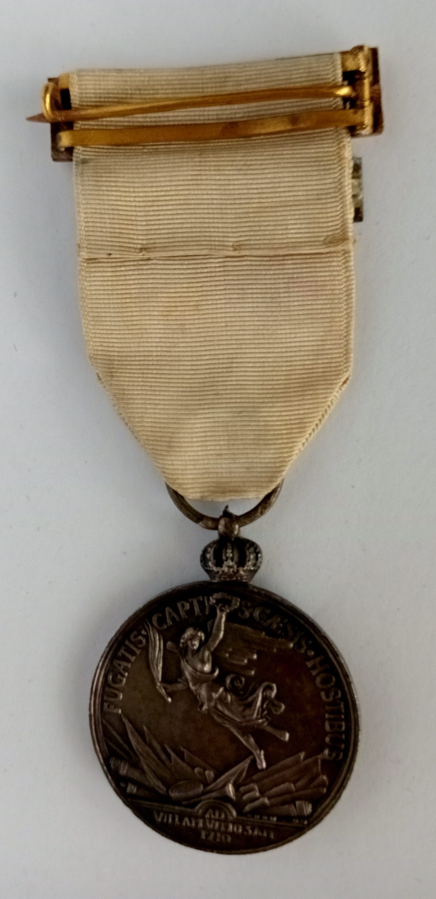
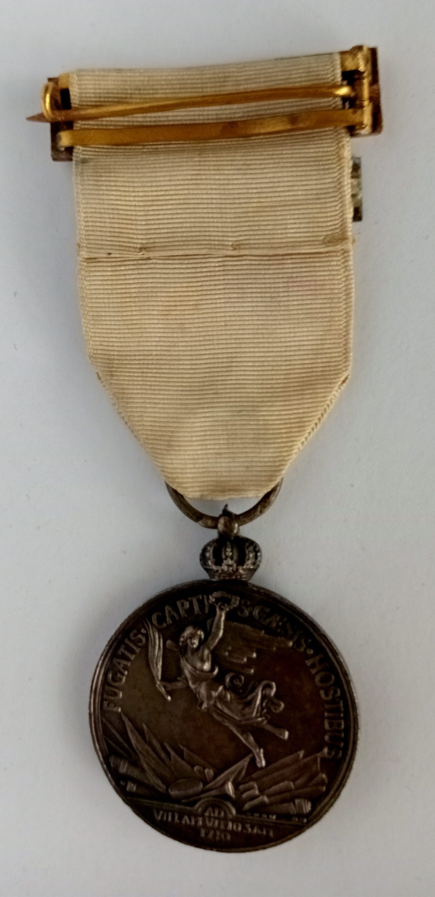

Real Decreto de 10 de febrero de 1911. Circular de oro, plata o bronce. Pequeña corona que la une a la anilla y cinta. En el anverso busto del Rey Felipe V y ”Philip. V. Hispan. Et. Sicil. Rex. triumphator”. En el reverso alegoría de la victoria sobre trofeos y “Fugatis captis. Caesis hostibus ad Villam Vitiosam 1710”. Cinta blanca bordada aspa roja y en sus extremos coronas, entre los brazos de las aspas castillo y leones, Pasador con el nombre de la medalla.
 
